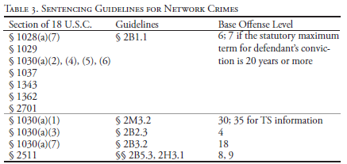
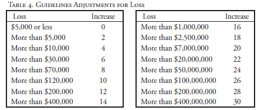

Chapter 5
Sentencing
This section addresses the United States Sentencing Guidelines (“Guidelines”) and the specific offense characteristics and adjustments commonly applicable to network crimes. This chapter should be read in light of the Supreme Court decision in United States v. Booker, 543 U.S. 220 (2005), which holds that courts must consider the United States Sentencing Guidelines, but that the Guidelines are advisory rather than mandatory.
The Guidelines treat most network crimes as basic economic offenses for which U.S.S.G. § 2B1.1 determines an offender’s sentence. This guideline applies to property damage, theft, and fraud. Wiretap violations are sentenced under a different Guideline, U.S.S.G. § 2H3.1 and are discussed in Section C.
A. Base Offense Levels
Table 4 sets forth the applicable offense conduct guideline and base offense level for each of the crimes discussed in this manual. When the conviction is for an attempted violation of a section 1030 crime, see 18 U.S.C. § 1030(b), courts should apply the appropriate guideline for the substantive offense and then decrease the offense level by three. See U.S.S.G. § 2X1.1(a), (b)(1).

As noted in Table 4, most network crimes will be sentenced under U.S.S.G. § 2B1.1. An offense sentenced under this section is usually assigned a basic offense level of six.
B. Adjustments Under Section 2B1.1
After determining the base offense level, prosecutors must determine whether any specific offense characteristics and adjustments may apply. Several relevant specific offense characteristics and adjustments are discussed below.
1. Loss
Under U.S.S.G. § 2B1.1(b)(1), the base offense level is increased based on the level of monetary loss the defendant caused according to a loss table:

The government bears the burden of proving the amount of loss by a preponderance of the evidence. See United States v. Jackson, 155 F.3d 942, 948 (8th Cir. 1998). Courts are not required to determine precisely the amount of loss attributable to a defendant. Rather, “[t]he court need only make a reasonable estimate of the loss.” U.S.S.G. § 2B1.1, cmt. n.3(C); see also Elliott v. United States, 332 F.3d 753, 766 (4th Cir. 2003); Jackson, 155 F.3d at 948. Tat reasonable estimate should take into account available information, including, but not limited to, the following: “[t]he fair market value of the property taken [or] copied . . . and revenues generated by similar operations.” U.S.S.G. § 2B1.1 cmt. n.3(C)(i), (v). Additionally, effective November 1, 2009, the Guidelines permit sentencing courts to estimate losses in cases involving proprietary information such as trade secrets by taking into account “the cost of developing that information or the reduction in value of that information” resulting from the offense. U.S.S.G. § 2B1.1, cmt. n.3(C)(ii). This language codifies the practice that some courts had already adopted. See United States v. Ameri, 412 F.3d 893 (8th Cir. 2005) (upholding calculation of loss by district court that took into account the costs of developing specialty commercial software that had been illegally copied).
In estimating the loss resulting from a defendant’s unlawful intrusions, courts should include the reasonable cost of any harm caused by his criminal conduct. Such amounts should include the reasonable value of the property taken by defendant (such as the data copied) even if the defendant did not deprive the owner of such data. Moreover, the Application Notes instruct the court to use the greater of actual loss or intended loss to determine the appropriate offense level increase for an offender. U.S.S.G. § 2B1.1, cmt.
n.3(A). If there is no reliable means of determining loss, the court should use the gain to the defendant instead. U.S.S.G. § 2B1.1, cmt. n.3(B); cf. United States v. Chatterji, 46 F.3d 1336, 1340 (4th Cir. 1995) (gain cannot be used where there is no loss); United States v. Andersen, 45 F.3d 217, 221-22 (7th Cir. 1995) (same).
Generally, “actual loss” is limited to “reasonably foreseeable pecuniary harm that resulted from the offense.” In addition, the definition of “intended loss” makes it clear that intended pecuniary harm should be counted even if it “would have been impossible or unlikely to occur.”
Beyond the general rules for calculating loss under the Guidelines, an additional comment expands the definition of “actual loss” to include certain additional harms, whether or not reasonably foreseeable, in cases brought under 18 U.S.C. § 1030. U.S.S.G. § 2B1.1, cmt. n.3(A)(v)(III). The commentary to the 2008 Guidelines states that for such offenses:
actual loss includes the following pecuniary harm, regardless of whether such pecuniary harm was reasonably foreseeable: any reasonable cost to the victim including the cost of responding to an offense, conducting a damage assessment, and restoring the data, program, system, or information to its condition prior to the offense, and any revenue lost, cost incurred, or other damages incurred because of interruption of service.
Id. (emphasis added).
Note that this definition adds to the normal definition of “actual loss” used to calculate sentences under the Guidelines. Accordingly, it is not to be used in place of, but rather in addition to, the fair market value of the data taken or copied by a defendant. This additional language expands the usual definition of “actual loss” for section 1030 offenses by including the value of certain pecuniary harms even if not reasonably foreseeable, but does not alter the definition of “intended loss.” Id.
At least one Circuit has also allowed costs reasonably associated with “preventing further damage resulting from Defendant’s conduct.” United States v. Middleton, 231 F.3d 1207, 1213 (9th Cir. 2000). Such costs must not be “excessive” and may not be costs that “merely create an improved computer system unrelated to preventing further damage.” Id. Given that instructions for exploiting known computer network vulnerabilities are easily shared via the Internet, the cost incurred by a victim to prevent attacks of those who might follow the defendant may be allowable as well.
With the exception of certain felony violations of 18 U.S.C. § 1030(a) (5), which may be proved by showing losses exceeding $5,000, and civil suits brought under 18 U.S.C. § 1030(g), loss is not an element of any offense under section 1030. While little published case law exists on the subject of calculating loss for sentencing purposes under section 1030(a)(5), a number of cases address the issue of loss in civil suits authorized under 18 U.S.C. § 1030(g). Section 1030(g) requires that civil plaintiffs prove one of the factors in 1030(c)(4)(A)(i)—typically loss of more than $5,000—before they can prevail. (“Loss” is discussed in detail beginning on page 41).
There are parallels between the language in the Guidelines commentary for loss in section 1030 cases and the definition of loss that is required to prove a felony violation under 18 U.S.C. § 1030(a)(5) and, therefore, to support a civil claim under 18 U.S.C. § 1030(g). Compare 18 U.S.C. § 1030(e)(11) with U.S.S.G. § 2B1.1, cmt. n.3(A)(v)(III). Section 1030(e)(11) begins the definition of “loss” by stating that loss “means any reasonable cost to any victim.” It then provides a nonexclusive list of costs that may be included within the definition of “loss” such as:
the cost of responding to an offense, conducting a damage assessment, and restoring the data, program, system, or information to its condition prior to the offense, and any revenue lost, cost incurred, or other consequential damages incurred because of interruption of service . . . .
18 U.S.C. § 1030(e)(11). This list is substantially similar to the list in the Guidelines commentary for § 2B1.1. See U.S.S.G. § 2B1.1, cmt. n.3(A)(v)(III).
Unlike the definition in the Guidelines that serves to expand the definition of actual loss, for civil cases brought under 18 U.S.C. § 1030(g) loss is limited to the definition set forth in section 1030(e)(11). In that context, a number of courts have held that revenue lost because a computer system was down due to an intrusion would be “loss,” but revenue lost to competitors who used customer data stolen from the victim would not. See Civic Ctr. Motors, Ltd. v. Mason St. Imp. Cars, Ltd., 387 F. Supp. 2d 378, 381 (S.D.N.Y. 2005) (“revenue lost because a defendant used unlawfully gained information to unfairly compete was not a type of ‘loss’ contemplated under the CFAA”) (citing Nexans Wires S.A. v. Sark-USA, Inc., 319 F. Supp. 2d 468, 478 (S.D.N.Y. 2004)). According to this line of civil cases, lost revenue (e.g., from lost goodwill or lost business opportunities) would only be “loss” under the 1030(e)(11) “if it resulted from the impairment or unavailability of data or systems.” Nexans, 319 F. Supp. 2d 468, 477 (quoting Register.com, Inc., v. Verio, 126 F. Supp. 2d 238, 252 n.12 (S.D.N.Y. 2000), af’d, 356 F.3d 393 (2d Cir. 2004)).
Although the concept of loss may be constrained in civil cases brought under section 1030(g)—or when establishing a felony under section 1030(a)(5)— prosecutors should be prepared to explain that courts are not similarly constrained when calculating loss at the time of sentencing for section 1030 offenses. In such cases, the loss that stems from the intrusion is merely one type of loss to be tallied. For example, the fair market value of the data copied unlawfully by a defendant is clearly a proper category of loss to be attributed to him at sentencing, regardless of whether or not that value could have been used to satisfy the loss requirement for a section 1030(a)(5) felony. U.S.S.G. § 2B1.1, cmt. n.3(C)(i).
Where a network offense includes use of a victim’s services without or in excess of authorization, loss may include the cost to the victim of providing such services. See, e.g., America Online, Inc. v. National Health Care Discount, Inc., 174 F. Supp. 2d 890, 900-02 (N.D. Iowa 2001) (awarding AOL $0.78 per thousand pieces of electronic mail that a spammer caused to be delivered in violation of AOL’s use policy). Loss does not include, however, expenses incurred cooperating with law enforcement’s investigation of the offense. U.S.S.G. § 2B1.1, cmt. n.3(D)(ii); United States v. Sablan, 92 F.3d 865, 870 (9th Cir. 1996) (excluding “expenses incurred due to meetings with the FBI” from loss calculation for purposes of restitution).
Finally, section 2B1.1 offers special instructions for determining loss in cases involving “unauthorized access devices.” Section 2B1.1 adopts the definitions used in 18 U.S.C. § 1029 for the terms “counterfeit access device” and “unauthorized access device.” See U.S.S.G. § 2B1.1, cmt. n.3(F)(i), n.9(A). The statute’s broad definition includes any code, account number, password, personal identification number, or other means of account access that has been stolen, forged, or obtained with intent to defraud. See 18 U.S.C. § 1029(e)(1)-(3); United States v. Petersen, 98 F.3d 502, 505 (9th Cir. 1996) (treating computer passwords as access devices). Where a defendant obtains access devices without authorization, such as by stealing a password file or by Internet credit card phishing, “loss includes any unauthorized charges made with the counterfeit access device or unauthorized access device and shall not be less than $500 per access device.” U.S.S.G. § 2B1.1, cmt. n.3(F)(i).
In a credit card phishing case in which the defendant charged $45,000 worth of purchases to fraudulently-obtained credit card numbers, possessed an additional 250 credit card numbers that he had not used, and also possessed 150 email account passwords, the loss would be equal to the sum of the charges ($45,000), $500 for each unused credit card number (250 x $500 = $125,000), and $500 for each password (150 x $500 = $75,000), resulting in a total loss of $245,000 and an offense level increase of 12 ($500 per access device is the minimum loss; if the actual charges exceed $500, the higher figure should be used instead). Under certain circumstances, it may even be appropriate to determine intended loss by aggregating the credit limits of the access devices: “[W]here a sentencing court has facts upon which to base findings that a defendant was capable of and intended to use the [credit] cards to secure amounts at or near their credit limits, aggregating the credit limits of the cards to calculate loss is appropriate.” See United States v. Say, 923 F. Supp. 611, 614 (D. Vt. 1995) (citing United States v. Egemonye, 62 F.3d 425 (1st Cir. 1995); United States v. Sowels, 998 F.2d 249 (5th Cir. 1993)).
2. Number of Victims
Section 2B1.1 imposes a graduated increase in offense level based on the number of victims that suffered actual loss as a result of the offense. See U.S.S.G. § 2B1.1(b)(2), cmt. n.1. If the offense causes loss to ten or more victims, the offense level is increased by two; if it causes loss to fifty or more victims, the offense level is increased by four; and if it causes loss to 250 or more victims, the offense level is increased by six. This specific offense characteristic may be particularly important in network crimes such as the propagation of worms or viruses, crimes that, by their very nature, involve a large number of victims.
Although this specific offense characteristic takes into account only those victims that suffered actual loss as a result of the offense, courts have suggested that in cases involving a large, unrealized intended loss, an upward departure may be appropriate. See United States v. Mohammed, 315 F. Supp. 2d 354 (S.D.N.Y. 2003). Similarly, although the specific offense characteristic does not take into account victims that have suffered non-monetary harm, it may be appropriate for the court to depart upward if there are a large number of such victims. See U.S.S.G. § 2B1.1, cmt. n.19(A)(ii) (indicating that upward departure may be appropriate if “[t]he offense caused or risked substantial nonmonetary harm”).
Additionally, the Guidelines that became effective November 1, 2009, provide a broader definition of victim in cases involving “means of identification.” In such cases, victims include those whose “means of identification were used unlawfully or without authority” in addition to those suffering actual loss.
3. Extraterritorial Conduct
The Guidelines indicate that the sentencing court should increase the base offense level by two levels or, if such an increase does not result in an offense level of at least twelve, to twelve if “a substantial part of a fraudulent scheme was committed from outside the United States.” U.S.S.G. § 2B1.1(b) (9)(B). Although no reported case offers insight into how courts will apply this specific offense characteristic to network crimes that cross international boundaries, there is a strong argument to be made that, even if an offender is physically located within the United States, he is subject to a two-level increase provided for in this specific offense characteristic if he avails himself of a foreign email account to receive, possess, and distribute messages in furtherance of a fraudulent scheme. Similarly, if an intruder avails himself of a computer in another country as a tool dump site or a proxy through which he can intrude into other computers or launch attacks, his conduct falls within the scope of this specific offense characteristic.
The 11th Circuit’s ruling in United States v. Singh, 291 F.3d 756 (11th Cir. 2002), supports this theory. In Singh, the defendant engaged in an elaborate scheme to obtain international long-distance telephone service free of charge for sale to third parties. After initiating a long-distance account with an American carrier using false information, the defendant would call his Kuwaiti “clients,” who would then provide him a number (usually in a third country) to which they wished to be connected. The defendant would use the three-way calling feature of his phone service to connect the Kuwaiti client. The telephone companies were unable to charge the defendant for these international calls (or anything else, for that matter) due to the fraudulent account information. Although the defendant did not originate this scheme outside the United States or personally take action outside the United States, and the government did not produce any evidence as to the identity or number of his coconspirators in Kuwait, the court upheld a sentencing enhancement on the basis that a substantial portion of the scheme was committed from outside the United States.
4. Sophisticated Means
Section 2B1.1 advises sentencing courts to increase the offense level by two levels (or to increase the offense level to 12, if the two-level increase results in an offense level lower than 12) if “the offense . . . involved sophisticated means.” U.S.S.G. § 2B1.1(b)(9)(C). A “sophisticated means” enhancement is appropriate if the offense includes “especially complex or especially intricate offense conduct pertaining to the execution or concealment of an offense.” U.S.S.G. § 2B1.1, cmt. n.8(B). The Application Note provides several examples of “sophisticated means,” such as locating Offices involved in a telemarketing scheme in more than one jurisdiction, or the use of offshore financial accounts. Id.; see also United States v. Paradies, 98 F.3d 1266, 1292 (11th Cir. 1996).
There are few reported cases regarding the application of the sophisticated means enhancement to a computer crime defendant. See, e.g., United States v. Harvey, 413 F.3d 850 (8th Cir. 2005) (defendants’ use of a computer to generate authentic looking checks as part of fraudulent scheme upheld as partial basis for sophisticated means enhancement); United States v. Jones, 530 F.3d 1292, 1305-07 (10th Cir. 2008) (same).
Prosecutors should consider seeking the “sophisticated means” enhancement for computer network crimes in which the defendant uses software or technology to conceal his identity or geographic location. For example, when a criminal uses an online proxy to prevent the victim or investigators from learning his IP address, he has employed a means directly analogous to the examples of offshore accounts and multiple jurisdictions already identified in the application note. Prosecutors contemplating application of this enhancement to computer crime are encouraged to contact CCIPS.
5. Trafficking in Access Devices
Section 2B1.1 advises sentencing courts to increase the offense level by two levels (or to increase the offense level to 12, if the two-level increase results in an offense level lower than 12) if “the offense involved . . . trafficking of any unauthorized access device or counterfeit access device.” U.S.S.G. § 2B1.1(b)
(10)(B). The definition of “access device” includes computer passwords and credit cards. See 18 U.S.C. § 1029(e)(1); United States v. Peterson, 98 F.3d 502, 505 (9th Cir. 1996) (acknowledging district court’s treatment of computer passwords as “access devices”); United States v. Caputo, 808 F.2d 963, 966 (2d Cir. 1987) (upholding district court finding that restaurant receipts containing credit card numbers are access devices). This specific offense characteristic may therefore be applicable to computer intrusion cases in which the intruder obtained the victim’s password and to online fraud cases in which the perpetrators obtain the victims’ password, credit card number, or bank account information.
6. Risk of Death or Injury
As basic services such as medical treatment, emergency response, public transportation, water treatment, and military protection rely increasingly on computer networks for their maintenance and operation, the risk that a computer crime might cause death or serious bodily injury increases. Section 2B1.1 takes this into account, providing a two-level increase (or an increase to level 14, if the two-level increase results in an offense level less than 14) “[i]f the offense involved . . . the conscious or reckless risk of death or serious bodily injury.” U.S.S.G. § 2B1.1(b)(13)(A). To merit this enhancement, the government must demonstrate by a preponderance of the evidence that the defendant was aware that his conduct created a risk of death or serious bodily injury and that he nonetheless consciously or recklessly disregarded that risk. See United States v. McCord, Inc., 143 F.3d 1095, 1098 (8th Cir. 1998). Courts have upheld application of this enhancement for a medical researcher who falsely reported the efficacy of a course of treatment for skin cancer, causing test subjects to forego other forms of treatment (United States v. Snyder, 291 F.3d 1291, 1295 (11th Cir. 2002)), for a defense contractor who provided helicopter armor that had not undergone ballistics tests when the contract required pretested armor (United States v. Cannon, 41 F.3d 1462, 1467 (11th Cir. 1995)), and for an airport security manager who consciously disregarded screening and testing requirements for airport security personnel (United States v. Safer, 118 F. Supp. 2d 546, 548-49 (E.D. Pa. 2000)).
7. Private Information15
Section 2B1.1(b)(15) directs a sentencing court to apply a two-level enhancement to the offense level of any defendant convicted of violating 18
U.S.C. § 1030 if his offense involved “an intent to obtain personal information, or . . . the unauthorized public dissemination of information.” U.S.S.G. 2B1.1(b)(15).2 Application Note 13 defines personal information as:
sensitive or private information involving an identifiable person (including such information in the possession of a third party), including (i) medical records; (ii) wills; (iii) diaries; (iv) private correspondence, including email; (v) financial records; (vi) photographs of a sensitive or private nature; or (vii) similar information.
Although the information obtained in many cases will fall squarely within the examples listed in this definition, other cases may require courts to extrapolate and determine whether specific information is of a kind that a reasonable computer user would consider sensitive or private.
Several aspects of this provision deserve brief discussion. First, the provision does not require a defendant to actually obtain personal information—he must merely intend to obtain it. So, for instance, a defendant who accessed without authorization an email service provider’s mail server but was unable to gain access to subscribers’ emails would receive this enhancement where the evidence also included an email or a chat session in which the defendant indicated that his intent was to obtain subscribers’ emails and mine them for sensitive, valuable information. Second, the provision uses the term “obtain,” a term that has been used broadly in the online context to include accessing or merely observing information. See S. Rep. No. 99-432, at 6-7 (1986), reprinted in 1986 U.S.C.C.A.N. 2479, 2484 (“‘obtaining information’ [for the purposes of 18 U.S.C. § 1030(a)(2)] includes mere observation of the data. Actual asportation, in the sense of physically removing the data from its original location or transcribing the data, need not be proved in order to establish a violation of this subsection.”).
Additionally, section 2B1.1(b)(15) includes a two-level enhancement for the public dissemination of personal information. However, because the provision only permits application of either—but not both—enhancements, it is likely to have limited application: the offender who unlawfully obtains personal information is typically the same person who disseminates it.
8. Intentional Damage
Section 2B1.1(b)(16)(A)(ii) requires a sentencing court to increase a defendant’s offense level by four levels if the defendant intentionally damages a protected computer in violation of 18 U.S.C. § 1030(a)(5)(A). This enhancement applies to any conviction under this statutory subsection, effectively raising the base offense level for such violations to ten.
Oddly, this provision is not cumulative with the enhancements for computers used to operate critical infrastructures, so intentional damage to an electrical grid earns the defendant the same four-level increase as intentional damage to a home computer.
9. Critical Infrastructures
Section 2B1.1(b)(16) contains a three-tiered approach to computer crimes affecting or relating to a “critical infrastructure.” An Application Note defines “critical infrastructure” as:
systems and assets vital to national defense, national security, economic security, public health or safety, or any combination of those matters. A critical infrastructure may be publicly or privately owned. Examples of critical infrastructures include gas and oil production, storage, and delivery systems, water supply systems, telecommunications networks, electrical power delivery systems, financing and banking systems, emergency services (including medical, police, fire, and rescue services), transportation systems and services (including highways, mass transit, airlines and airports), and government operations that provide essential services to the public. U.S.S.G. § 2B1.1, cmt. n.13(A).
The first tier directs a court to increase a defendant’s offense level by two levels if the offense was a violation of 18 U.S.C. § 1030 that “involved . . . a computer system used to maintain or operate a critical infrastructure, or used by or for a government entity in furtherance of the administration of justice, national defense, or national security.” U.S.S.G. § 2B1.1(b)(16)(A)(i). This lowest tier enhancement applies even if the computer in question is not damaged or disrupted; mere access to such a computer is sufficient to trigger the two-level increase.
The second tier imposes a six-level enhancement (or, if the resulting offense level is still less than 24, an increase to 24) for violations of section 1030 that “caused a substantial disruption of a critical infrastructure.” U.S.S.G. § 2B1.1(b)(16)(A)(iii), (b)(16)(B).
The third tier indicates that an upward departure (beyond offense level 24) is appropriate if a violation of section 1030 is “so substantial as to have a debilitating impact on national security, national economic security, national public health or safety, or any combination of those matters.” U.S.S.G. § 2B1.1, cmt. n.19(B) (emphasis added). The Sentencing Commission provides little guidance as to what qualifies as a “substantial disruption” or as a “debilitating impact.” In defining “debilitating impact,” the Commission added the word “national” as a modifier of “security,” “economic security,” and “public health or safety,” indicating that with regard to these factors, a local (as opposed to national) disruption may not qualify as “debilitating.”
C. CAN-SPAM Act
Section 2B1.1 contains a new two-level increase for defendants who are convicted of violating the CAN-SPAM Act, 18 U.S.C. § 1037, and whose offense “involved obtaining electronic mail addresses through improper means.” U.S.S.G. § 2B1.1(b)(7). The commentary states that the term “improper means” includes “unauthorized harvesting of electronic mail addresses of users of a website, proprietary service, or other online public forum.” U.S.S.G. § 2B1.1, cmt. n.6. Prosecutors considering use of this enhancement are encouraged to contact CCIPS.
In addition, under U.S.S.G. § 2B1.1(b)(2)(A)(ii), a violator of section 1037 will automatically receive at least a two-level increase for mass-marketing and may receive a larger increase based on the number of victims.
D. Wiretap Act
Sentences for most violations of the Wiretap Act involving network crimes are addressed by Guideline § 2H3.1 (Interception of Communications; Eavesdropping; Disclosure of Tax Return Information).16 The base offense level is nine. U.S.S.G. § 2H3.1(a)(1). If the purpose of the offense was to obtain commercial advantage or economic gain, the offense level increases by three. U.S.S.G. § 2H3.1(b)(1)(B). If the violation also constitutes an attempt to commit another offense, courts should apply the guideline that would result in a greater offense level. U.S.S.G. § 2H3.1(c)(1).
As a result of being grouped differently than most other network crimes, violations of the Wiretap Act generally begin with a higher base offense level. This leads to an initial sentencing range at least four months greater than comparable interceptions of stored communications. Compare U.S.S.G. § 2H3.1(a)(1) (base offense level nine corresponding to imprisonment of 4 to 10 months at Criminal History Category I) with U.S.S.G. § 2B1.1(a)(2) (base offense level six corresponding to 0 to 6 months imprisonment at Criminal History Category I).
However, Wiretap Act violations are not subject to the same specific offense characteristics and adjustments available in Guideline § 2B1.1. The absence of these potential enhancements to the offense level for, among other things, the amount of loss caused by the offense could result in much shorter sentences for Wiretap Act violations than for unauthorized access to stored communications. For instance, a Wiretap Act violation not committed for economic gain by a person with no criminal history would result in a sentencing range of 4 to 10 months. Such a defendant would be in Zone B and thus eligible for a sentence of probation (combined with intermittent confinement, community confinement, or home detention). See U.S.S.G. § 2H3.1. The amount of loss caused by the individual’s interception will not affect the sentence.
In contrast, an intruder who illegally accessed a stored communication in violation of 18 U.S.C. § 2701 (rather than intercepting a communication contemporaneous with its transmission) faces a sentence that is potentially much more severe. Under section 2701, a sentence can be heavily influenced by the amount of damage caused by the intruder’s conduct. For instance, if an intruder’s conduct caused more than $1,000,000 in loss, that individual would face a minimum sentence of almost three and one-half years.
E. Generally-Applicable Adjustments
1. Overview
The sentencing adjustments set forth in Chapter 3 of the Guidelines may further alter the base offense level. In particular, if the computer crime involved, or was intended to promote, a federal crime of terrorism, U.S.S.G. § 3A1.4 may apply. It also may be appropriate to adjust the defendant’s sentence based on his role in the crime. The defendant may have played an aggravating role (U.S.S.G. § 3B1.1) or a mitigating role (U.S.S.G. § 3B1.2), may have used special skill (U.S.S.G. § 3B1.3), or may have involved a minor in the commission of the crime (U.S.S.G. § 3B1.4). If the defendant has tried to delete or destroy evidence, or otherwise frustrate law enforcement’s investigation of his crime, an obstruction adjustment may also be appropriate (U.S.S.G. § 3C1.1). On the other hand, if the defendant has been forthcoming about his role in committing the offense and has cooperated with law enforcement, a downward adjustment for acceptance of responsibility may be appropriate (U.S.S.G. § 3E1.1).
2. Special Skill
Section 3B1.3 of the Guidelines advises sentencing courts to increase a defendant’s offense level by two “[i]f the defendant . . . used a special skill[] in a manner that significantly facilitated the commission or concealment of the offense.” Section 3B1.3 cautions, however, that courts should not impose the enhancement if the factual predicate that justifies a special skill enhancement has already been the basis for a specific offense characteristic (such as the “sophisticated means” characteristic under U.S.S.G. § 2B1.1). However, “so long as the court finds a sufficient independent factual basis for both” a sophisticated means enhancement and a special skill enhancement, “it may impose both.” United States v. Minneman, 143 F.3d 274, 283 (7th Cir. 1998); see also United States v. Rice, 52 F.3d 843, 851 (10th Cir. 1995) (noting that both enhancements may be applied because “each of these enhancements serves a distinct purpose”).
The commentary provides some guidance as to what qualifies as a special skill:
“Special skill” refers to a skill not possessed by members of the general public and usually requiring substantial education, training or licensing. Examples would include pilots, lawyers, doctors, accountants, chemists, and demolition experts.
U.S.S.G. § 3B1.3, cmt. n.4. As courts have noted, however, “[a] defendant does not need to have formal education or professional stature to have a special skill within the meaning of § 3B1.3[;] a special skill can be derived from experience or from self-tutelage.” United States v. Nelson-Rodriguez, 319 F.3d 12, 58 (1st Cir. 2003) (quoting United States v. Noah, 130 F.3d 490, 500 (1st Cir. 1997); see also United States v. Urban, 140 F.3d 229, 236 (1st Cir. 1998) (“[A] § 3B1.3 sentence enhancement is not limited to persons who have received substantial formal education, training from experts, or who have been licensed to perform a special skill.”).
The inquiry regarding whether a particular skill constitutes a “special skill” for the purposes of section 3B1.3 is intensely fact specific. The metric of comparison by which it is determined whether a skill is “special,” i.e., whether it is possessed by the general public, may also evolve over time and vary from one community to another. As a result, courts have not spoken with a clear voice regarding what qualifies as a special skill. Courts have upheld imposition of the enhancement upon a mechanical drafter whose knowledge of “complex” drafting software facilitated his theft of trade secrets (United States v. Lange, 312 F.3d 263, 270 (7th Cir. 2002)) and upon an intruder who demonstrated an ability to “bypass security protocols to gain access to computer systems” (United States v. Petersen, 98 F.3d 502, 508 n.5 (9th Cir. 1996) (noting that imposition of the enhancement is appropriate “[o]nly where a defendant’s computer skills are particularly sophisticated”)). See also United States v. O’Brien, 435 F.3d 36 (1st Cir. 2006) (in section 1030(a)(5) case, upholding sentencing increase based on use of special skill because commission of the offense involved knowledge of specific computer program, which required special training, and defendant had considerable skill in using that program, as demonstrated by fact that he taught class for that program). On the other hand, courts have overturned application of the special skill enhancement to a defendant who copied and modified webpage source code to facilitate a fraud scheme (United States v. Lee, 296 F.3d 792, 799 (9th Cir. 2002)) and a defendant who used of-the-shelf software to produce counterfeit currency (United States v. Godman, 223 F.3d 320, 323 (6th Cir. 2000)). If there is coherent precedent to be gleaned from this case law, it is that the government must present to the sentencing court considerable evidence that the defendant’s uncommon ability facilitated the commission or concealment of the crime.
F. Conditions of Supervised Release
Increasingly, prosecutors, parole Officers, and courts struggle to impose appropriate conditions on the Internet use of defendants whose sentences include terms of supervised release. Courts have circumscribed discretion in imposing such conditions—they may fashion any remedy that takes into consideration certain enumerated criteria. See United States v. Holm, 326 F.3d 872, 876 (7th Cir. 2003); United States v. White, 244 F.3d 1199, 1204 (10th Cir. 2001); see also 18 U.S.C. §§ 3583(c), 3553 (enumerating the criteria). Of particular relevance to computer crimes, courts must consider the need for the sentence imposed “to afford adequate deterrence to criminal conduct” and “to protect the public from further crimes of the defendant.” 18 U.S.C. § 3553(a)(2)(B), (a)(2)(C). Where a networked computer has been used to perpetrate online fraud, to receive contraband such as child pornography or stolen credit card numbers, or as the instrument of intrusions into or attacks on other computers, these considerations may militate in favor of imposing a restriction on computer use as a condition of supervised release.
Section 3553(a) requires that conditions of supervised release impose upon a defendant “no greater deprivation of liberty than is reasonably necessary to achieve” a valid penological purpose. Holm, 326 F.3d at 876; White, 244 F.3d at 1204-05. When such conditions affect a defendant’s use of the Internet, a recognized forum for First Amendment activity, this statutory requirement takes on constitutional implications. See United States v. Scott, 316 F.3d 733, 736 (7th Cir. 2003); see generally ACLU v. Reno, 521 U.S. 844 (1997). On a more pragmatic level, courts have noted that in an era when the Internet is a prevalent means of communication, source of information, and medium for commercial transactions and the provision of public services, “a strict ban on all Internet use . . . renders modern life . . . exceptionally difficult.” Holm, 326 F.3d at 878.
As a result, appellate courts have routinely struck down conditions of supervised release that infringe upon a defendant’s Internet use more than necessary and have admonished sentencing courts and parole Officers to tailor the conditions more narrowly to the end to be served. See, e.g., United States v. Freeman, 316 F.3d 386, 392 (3d Cir. 2003); Scott, 316 F.3d at 737 (suggesting as an alternative to a total ban on Internet use unannounced inspections of a defendant’s computer); Holm, 326 F.3d at 879 (suggesting random searches of a defendant’s computer and use of filtering software as an appropriate condition for a defendant convicted of possessing child pornography); White, 244 F.3d at 1204-07. At least one court has suggested, however, that a total ban may be appropriate where a defendant’s crime involves using a computer to attack or intrude upon others’ networks. See Scott, 316 F.3d at 736 (dicta) (“Inveterate intruders who have used access to injure others may be ordered to give up the digital world.”). Similarly, courts have not hesitated to uphold limitations on computer use that are appropriately circumscribed. See United States v. Ristine, 335 F.3d 692 (8th Cir. 2003) (defendant not allowed home internet connection and if allowed a computer, would be required to consent to unannounced inspections of computer as well as installation of monitoring hardware or software); United States v. Crandon, 173 F.3d 122 (3d Cir. 1999) (defendant not allowed to use Internet or computer networks unless approved by probation Officer).
These cases suggest that prosecutors and parole Officers should work together to propose to sentencing courts conditions of supervised release that achieve their objectives while infringing upon defendants’ legitimate Internet use with care. They also suggest, however, that if such conditions are reasonably crafted to be respectful of defendants’ liberties, they are appropriate and will be upheld.